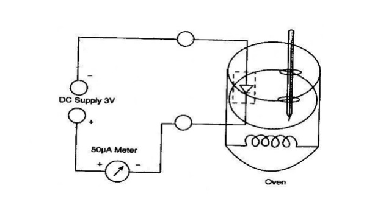

To determine the band gap (\(\Delta E\)) of a semiconductor diode (Ge/Si) by studying the variation of reverse saturation current (\(I_s\)) with temperature.
Apparatus Required
Power supply (3V DC), Micro-ammeter, Oven, Thermometer, Ge Diode, Wires.
Formula Used
$$ \log I_s = \text{Constant} - 5.036\,\Delta E \left(\frac{10^3}{T}\right) $$
$$ \Delta E = \frac{\text{slope}}{5.036} \text{ eV} $$
Figure 1
[Image missing: Place fig1.jpg in folder]'">
Table 1: Measurements
S.No
Current \(I_s\) (µA)
Temp (°C)
Temp (K)
\(10^3/T\)
\(\log I_s\)
1
2
3
4
5
6
7
8
Graph: \(\log I_s\) vs \(10^3/T\)
px
(10th=3px, 5th=2px, Rest=1px)
Calculations & Result
Slope:
$$ \Delta E = \frac{\text{slope}}{5.036} $$
Calculated \(\Delta E\) = --- eV